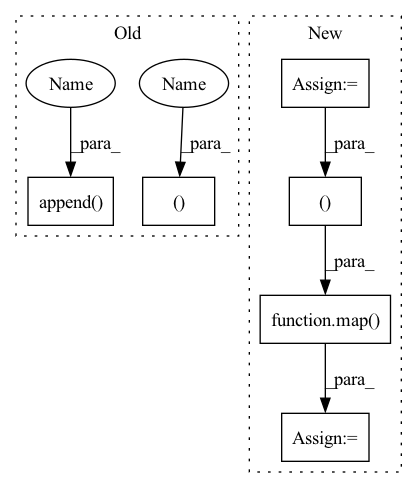

Pattern ID :298

Before Change
diff = 0
codes = []
for vq in self.vqs:
_xq, _diff, _codes = vq(x - xq)
diff = diff + _diff
xq = xq + _xq
codes.append(_codes)
codes = torch.cat(codes, 1)
return xq, (x - xq).pow(2).mean(), codes
def encode(self, x):
After Change
residual = x
all_losses = []
all_indices = []
n_q = n_q or len(self.layers)
for layer in self.layers[:n_q]:
quantized, indices, loss = layer(residual)
residual = residual - quantized
quantized_out = quantized_out + quantized
all_indices.append(indices)
all_losses.append(loss)
out_losses, out_indices = map(torch.stack, (all_losses, all_indices))
return quantized_out, sum(out_losses), out_indices.permute(1, 0, 2)
def encode(self,
x: torch.Tensor,
In pattern: SUPERPATTERN
Frequency: 3
Non-data size: 6
Instances
Fragment ID: 967407
Project Name: acids-ircam/rave
Commit Name: b58cba5d330c227f2122bc07fcbf7ed068eb91be
Time: 2023-01-24
Author: caillon@ircam.fr
File Name: rave/quantization.py
M Class Name: ResidualVQ
N Class Name: ResidualVectorQuantization
M Method Name: forward(3)
N Method Name: forward(2)
M Parent Class: nn.Module
N Parent Class: nn.Module
M File Name: rave/quantization.py
N File Name: rave/quantization.py
M Start Line: 106
M End Line: 116
N Start Line: 289
N End Line: 307
'>
Before Change
diff = 0
codes = []
for vq in self.vqs:
_xq, _diff, _codes = vq(x - xq)
diff = diff + _diff
xq = xq + _xq
codes.append(_codes)
codes = torch.cat(codes, 1)
return xq, (x - xq).pow(2).mean(), codes
def encode(self, x):
After Change
residual = x
all_losses = []
all_indices = []
n_q = n_q or len(self.layers)
for layer in self.layers[:n_q]:
quantized, indices, loss = layer(residual)
residual = residual - quantized
quantized_out = quantized_out + quantized
all_indices.append(indices)
all_losses.append(loss)
out_losses, out_indices = map(torch.stack, (all_losses, all_indices))
return quantized_out, sum(out_losses), out_indices.permute(1, 0, 2)
def encode(self,
x: torch.Tensor,
'>
Fragment ID: 967405
Project Name: caillonantoine/rave
Commit Name: b58cba5d330c227f2122bc07fcbf7ed068eb91be
Time: 2023-01-24
Author: caillon@ircam.fr
File Name: rave/quantization.py
M Class Name: ResidualVQ
N Class Name: ResidualVectorQuantization
M Method Name: forward(3)
N Method Name: forward(2)
M Parent Class: nn.Module
N Parent Class: nn.Module
M File Name: rave/quantization.py
N File Name: rave/quantization.py
M Start Line: 106
M End Line: 116
N Start Line: 289
N End Line: 307
'>
Before Change
if use_memory:
memories = (next(mem_iter), next(lmem_iter))
x, (mem_out, lmem_out) = attn(x, memories = memories, calc_memory = use_memory, input_mask = mask, pos_emb = pos_emb)
x, = ff(x)
if use_memory:
next_mem.append(mem_out)
next_lmem.append(lmem_out)
out = self.to_logits(x)
next_mem, next_lmem = map(torch.stack, (next_mem, next_lmem))
After Change
num_memory_layers = len(self.memory_layers)
init_mem = lambda: torch.empty(num_memory_layers, b, 0, d, **to(x))
mem = default(mem, init_mem)
lmem = default(lmem, init_mem)
mem_len, lmem_len = map(lambda t: t.shape[2], (mem, lmem))
total_len = mem_len + lmem_len + self.seq_len
pos_emb = self.pos_emb[:, (self.seq_len - t):total_len]
mem_iter, lmem_iter = map(iterate_tensor, (mem, lmem))
'>
Fragment ID: 967418
Project Name: lucidrains/memory-transformer-xl
Commit Name: cbabe1ae6fa311092a9d0a88116c079a5ad8d790
Time: 2020-07-22
Author: lucidrains@gmail.com
File Name: memory_transformer_xl/memory_transformer_xl.py
M Class Name: MemoryTransformerXL
N Class Name: MemoryTransformerXL
M Method Name: forward(4)
N Method Name: forward(4)
M Parent Class: nn.Module
N Parent Class: nn.Module
M File Name: memory_transformer_xl/memory_transformer_xl.py
N File Name: memory_transformer_xl/memory_transformer_xl.py
M Start Line: 255
M End Line: 296
N Start Line: 306
N End Line: 345